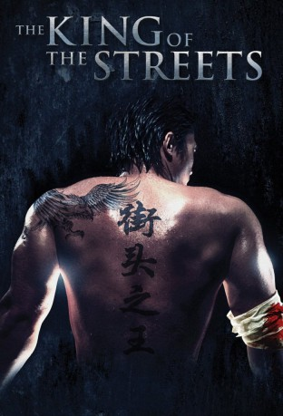

#4813 The King of the Streets
 gesehen am 21.11.2016
gesehen am 21.11.2016
 
 IMDB-Wertung: 4.9 / 10
IMDB-Wertung: 4.9 / 10  Metascore: 0
Metascore: 0 
Yue Feng ist ein exzellenter Street-Fighter, der keiner Herausforderung aus dem Weg geht. Bei einem Kampf tötet er seinen Gegner unabsichtlich, wird dafür aber acht Jahre ins Gefängnis geschickt. Als er wieder rauskommt, ist er ein anderer Mann. Nicht länger will er kämpfen, doch dann bleibt ihm keine Wahl: Als Mitglieder seiner Familie ermordet werden, muss er einmal mehr seine Fertigkeiten einsetzen, aber diesmal kämpft er für eine gerechte und gute Sache!
Jahr: 2012
Dauer: 87 Minuten
FSK: 18
Land: China Studio: Paragon MoviesTonspuren:
Untertitel:
Auflösung: 720p (1280x720) Größe: 2099 MB
Genre: Action
Regisseur: Zhong Lei, Yue Song
Drehbuch: Elisa Bell
Soundtrack:
Darsteller:
- Kang En als
- Yang JunPing als
- Becki Li als
- Chang-Hai Li als
- Yue Song als Yue Feng
- JianPing Yang als
Datei: X:\FSK18-Eastern\King of the Streets, The (2012, FSK18, 1280x720).mkv seit 18.11.2016
Festplatte: FSK18
 Es gibt insgesamt 102 Filme in der Gruppe 'FSK18-Eastern'
Es gibt insgesamt 102 Filme in der Gruppe 'FSK18-Eastern'